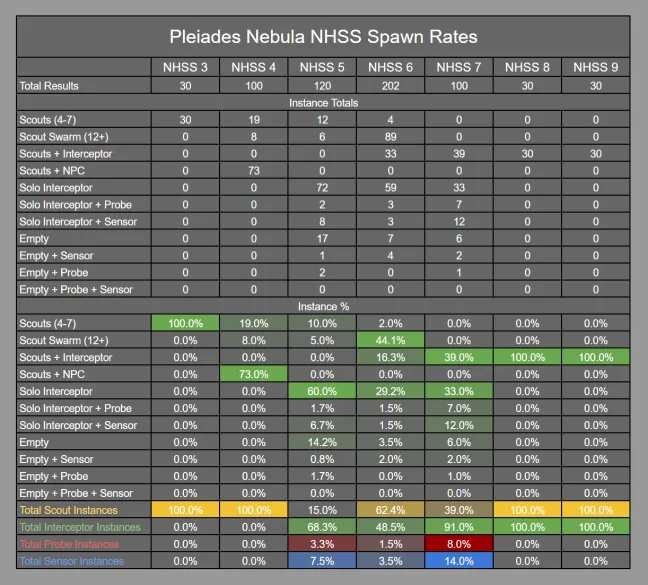

Non-Human Signal Sources (NHSS) (not to be confused for Nonhuman Signatures (NHS)) are locations where xeno vessels or technology can be found. At the time of writing, the only alien species that are interactable with in the galaxy are the Thargoids (while there are Guardian Ruins we can not interact with the Guardians themselves).
Non-Human Signal Sources are ranked based on their Threat rating, starting at Threat Level 0 and rising all the way to Threat Level 9, with various outcomes available based on the threat level of the Signal Source dropped into, a table of which can be found at the bottom of the page.
Multiple different instances can spawn when entering into a NHSS. Non-Human Signal Source Threat Levels 0 through 2 will simply be empty space with a Thargoid Probe a short distance away from the entering commander. While instances containing only Thargoid Scouts (Threat Levels 3 through 6) are commonly comprised of a large debris field, assumedly of ships they have destroyed.
NHSS of sufficient Threat to contain an Interceptor vessel (Threat 5-9) can consist of multiple different instances; the most common of which are a series of destroyed or disabled vessels floating inside an acid-green coloured cloud (while the cloud shares similarities in appearance with the caustic effect, it is harmless to commander ships). The lone Interceptor will be found a short distance away from the cloud, passive until it detects the ship. NHSS that are guaranteed to contain a lone Interceptor vessel will always consist of a large debris field similar to those found in Scout instances.
Article and image credit to CMDR Firehawk894.
| Threat Level | Found in the Instance | Special Notes |
| Threat 0 | 1x Thargoid Probe | Threat 0 signal sources are exceedingly rare, with only a handful being spotted during the Coalsack invasion |
| Threat 1 | 1x Thargoid Probe | Threat 0 signal sources are exceedingly rare, with only a handful being spotted during the Coalsack invasion |
| Threat 2 | 1x Thargoid Probe | Threat 0 signal sources are exceedingly rare, with only a handful being spotted during the Coalsack invasion |
| Threat 3 Instance A | 2 x Thargoid Scouts Debris Field Salvage | Thargoid Scouts are immediately hostile in any situation |
| Threat 3 Instance B | 2 x Thargoid Scouts 1-2 x Human ships | These human ships will not be AX equipped and will begin to flee as soon as the Scouts jump in. |
| Threat 4 Instance A | 4-7 x Thargoid Scouts 1-3 x Human Ships | These human ships will not be AX equipped and will begin to flee as soon as the Scouts jump in. |
| Threat 4 Instance B | 4-8 x Thargoid Scouts Debris field | |
| Threat 4 Instance C | 12+ x Thargoid Scouts | The Scout swarm is especially rare for Threat 4 |
| Threat 4 Instance D | 1 x Thargoid Probe/Sensor 1 x Thargoid Interceptor – Orthrus Class ? x Thargoid Scouts | The Orthrus will only appear in Threat 4 NHSS’s currently under the “Thargoid Alert” state |
| Threat 5 Instance A | 4-8 x Thargoid Scouts | |
| Threat 5 Instance B | 12+ x Thargoid Scouts | The Scout swarm is also rare for Threat 5 to contain |
| Threat 5 Instance C | 1 x Thargoid Interceptor – Cyclops Class | Unlike Scouts, Thargoid Interceptors found alone in Signal Sources are initially neutral |
| Threat 6 Instance A | 12+ x Thargoid Scout | The 12+ swarm of Scouts is much more likely at Threat 6 |
| Threat 6 Instance B | 1x Thargoid Interceptor – Cyclops Class 4 x Thargoid Scout | Thargoid Scouts are initially present, with a Cyclops jumping in soon after. Interceptors encountered alongside Scouts are immediately hostile |
| Threat 6 Instance C | 1 x Thargoid Interceptor – Basilisk Class | The Basilisk will be initially neutral |
| Threat 7 Instance A | 1 x Thargoid Interceptor – Basilisk Class 4 x Thargoid Scouts | Scouts will initially be present and hostile, before a hostile Basilisk joins the fight soon after. |
| Threat 7 Instance B | 1 x Thargoid Interceptor – Medusa Class | The Medusa will be initially neutral. |
| Threat 8 Instance A | 1x Thargoid Interceptor – Medusa Class 4 x Thargoid Scout | Scouts will initially be present and hostile, before a hostile Medusa joins the fight soon after. |
| Threat 8 Instance B | 1 x Thargoid Interceptor – Hydra Class | The lone Hydra will be initially neutral, fortunately for you. |
| Threat 9 | 1 x Thargoid Interceptor – Hydra Class 4 x Thargoid Scouts | Scouts will initially be present and hostile, before a hostile Hydra joins the fight soon after. |
This table is supplemented by the table below from AXI.
